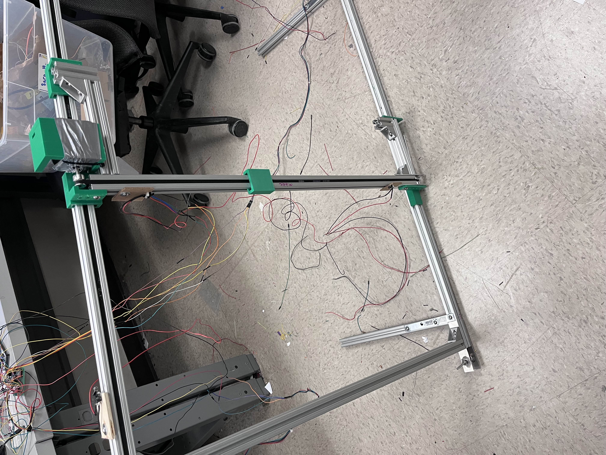
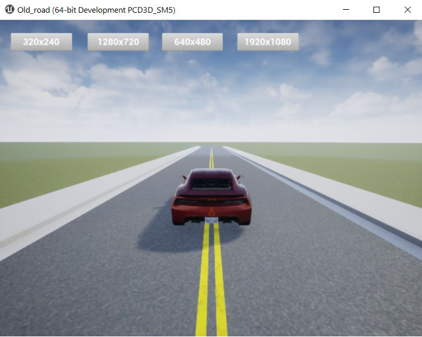

// Systems in Action
Featured Engineering

Autonomous Flight Computer
Designed, built, and flight-tested a custom 4-layer PCB Guidance, Navigation, and Control (GNC) system to recover scientific payloads. Features heavy copper power-isolation for mechatronics, a 7-state EKF running on FreeRTOS (STM32H7), and a custom RF bias-tee front-end. Achieved < 5m landing accuracy from a 75m drop.
MASA Avionics Telemetry
Leading the development of a 2.4GHz LoRa telemetry system to transmit rocket flight data from 75,000 feet. Wrote bare-metal C drivers for the Semtech SX1280 transceiver and performed link budget analysis to recover a -9.6 dBm deficit via LNA integration.

Multi-Modal Robotic Gantry
Developed a 2-axis targeting gantry driven by an STM32. Implemented automated target tracking using OpenCV for computer vision, alongside manual multi-modal control interfaces parsed from Wii remotes and PS2 joysticks via SPI/I2C.

Adaptive Cruise Control (HIL)
Modeled and deployed a multi-mode ACC and lane-keeping PD controller in Simulink. Generated code onto an NXP S32K144 MCU, validating state machines via hardware-in-the-loop testing and CAN Bus communications.
IoT Occupancy Monitor
Engineered a 2-layer ESP32-based PCB integrating a Time-of-Flight sensor. Optimized RF keep-out zones and ground pours for reliable Wi-Fi telemetry to accurately track up to 100 individuals dynamically.